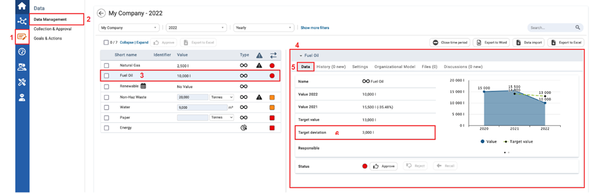

In the Data Management module, users can use the target deviation function to view the difference between the actual value and target value. This can be used to analyze actual performance.
Pre-requisites:
To compare actual KPI value with target KPI value:

| 1 | On the left navigation panel, click Data. |
| 2 | Click Data Management. |
| 3 | Select either a numeric or formula KPI of interest that you know that has targets entered for the selected organizational unit. |
| 4 | Information on the KPI will display to the right. |
| 5 | Click the Data tab. |
| 6 | In the Data tab, you can view the Target deviation. The targe deviation value (3,000) is the difference of actual KPI value (10,000) and target KPI value (13,000). Note: The target deviation can only be shown if an actual value and a target has been entered for a specific KPI for a specific year. |